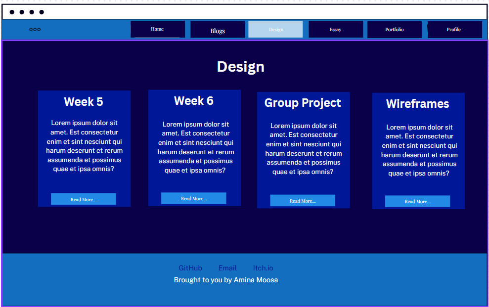
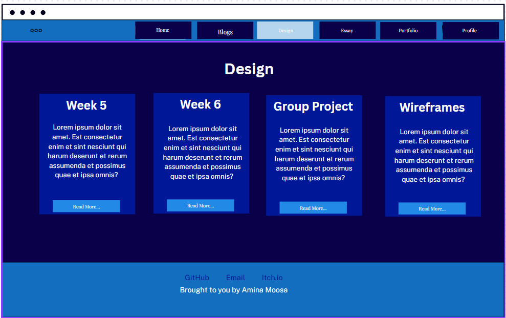

Research for Design Section
Style Guides
Goal and aesthetic as a single statement: My portfolio blends futuristic, tech-inspired aesthetics with interactive design, showcasing my creativity, skills, and projects while inviting users to explore my work and experience my evolving style.
Expanded: My portfolio website merges futuristic, tech-inspired aesthetics with interactive, dynamic design to showcase my creativity, skills and projects. With glowing, holographic elements and smooth, immersive navigation, I want the site to invite users to explore my work - from essays and blog insights to projects. It’s not just a showcase, but an experience: a digital playground where users engage with my creations, embodying the innovative spirit of game design and interactive media. A lot of inspiration is taken from Iron Man's J.A.R.V.I.S
The visual design elements selected: Aesthetic: Sort of a sleek, futuristic interfaced mixed with electric blue hues. For blogs, glowing cards that hover softly against a dark, metallic backdrop. Neon accents to trace the subtle lines of the layout, sort of resembling advanced HUD displays.
Colour Swatches:
Box shadow effect inside the containers: rgba(0, 255, 255, 0.3)
Hover over text and normal text: aliceblue
Container border: #00156a
Background: linear-gradient(-45deg, #00001b, #0a0049, #00156a, #000d5d);

Navigation: box-shadow: 0 0 15px #001dff, 0 0 30px #001dff inset;
border-top: 1px solid #00f6ff;
Font Samples:
Inspiration for the text stems from the code-like aesthetic.
This is the font sample for the Headings:
Font sample for any text that need to be highlighted like logo
Font sample for normal paragraph text:
Final design Sketches:
 

Wireframes
Interaction Points: Hover Effects: Buttons, cards and links should glow or shift colour subtley, sort of simulating light reflections Cursor Tracking: I want to achieve something where the background elements move slightly with the cursor position to create a parallax, "responsive environment" feel. This is just a idea, I'm not quite sure if I'm sitting well with the idea yet. Page Transitions: Maybe something along the lines of smooth fades or quick digital "glitch" animations when switching sections.
User Flow electric Home → Portfolio: The aim is for the homepage to serve as a visual hook, but also since it’s functioning as my profile, I want it to guide the user towards the portfolio as the main destination (with clear paths to explore the essays, blogs and design section) Portfolio → Designs: Portfolio pieces to prompt the viewer into the design section to get a sneak peek of the behind-the-scenes and show concepts. Blog→ Essays: The blogs should kind of flow into the essays for a more deeper, analytical dive into my work. Footer: A minimal footer with contact links, maybe styled like a control panel or status bar from Tony Stark's J.A.R.V.I.S system